通信原理学习笔记¶
《通信原理》是通信工程、电子信息工程、自动化、轨道交通信号与控制等相关专业的一门核心专业基础课程，旨在系统介绍现代通信系统的基本理论、关键技术与分析方法。
课程主要内容包括：通信系统的基本组成与分类（模拟通信与数字通信）、信号与频谱分析、随机过程基础、信道模型与特性（如AWGN信道、衰落信道）、模拟调制技术（AM、FM、PM）、数字基带传输（码型、码间串扰、眼图、均衡）、数字频带调制（ASK、FSK、PSK、QAM）、同步技术、差错控制编码基础，以及信息论初步（如信息量、信源熵、信道容量）等。
通过本课程的学习，学生能够理解信息从发送端到接收端的完整传输过程，掌握调制解调、抗噪声、频谱效率等核心概念，具备分析和设计基本通信系统的能力，为后续学习移动通信、光纤通信、信号与系统、数字信号处理等课程奠定坚实的理论基础。
| 章节 | 重要程度 | 题型 | 考点 |
|---|---|---|---|
| 第一课：绪论 | \(\star \star \star\) | 选择题\(/\)计算题 | 信息及其度量、有效性和可靠性 |
| 第二课：确知信号 | \(\star \star \star \star \star\) | 填空题\(/\)计算题 | 能量谱和功率谱、自相关函数、互相关函数 |
| 第三课：随机过程 | \(\star \star \star\) | 选择题\(/\)分析题 | 狭义平稳和广义平稳、高斯随机过程一维概率密度函数 |
| 第四课：信道 | \(\star \star \star \star\) | 分析题\(/\)计算题 | 恒参\(/\)随参信道对信号的影响、信道容量 |
| 第五课：模拟调制系统 | \(\star \star \star \star \star\) | 填空题\(/\)计算题 | 幅度调制、角度调制、功率和带宽的计算 |
| 第六课 : 数字信带传输系统 | \(\star \star \star \star \star\) | 分析题/计算题 | 无码间干找、码型转换、最佳判决门限和误码率计算 |
| 第七课 : 数字带通传输系统 &新型数字带通调制技术 | \(\star \star \star \star \star\) | 填空题/计算题 | 二进制数字调制、正交振幅调制、带宽和频带利用率的计算 |
| 第八课 : 数字信号最佳接收 | \(\star \star\) | 选择题/分析题 | 最佳接收结构、最佳接收原则 |
| 第九课 : 信源编码 | \(\star \star \star\) | 填空题/计算题 | 抽样定理、量化信噪比 |
| 第十课 : 差错控制编码 | \(\star \star \star\) | 填空题/计算题 | 监督矩阵、生成矩阵 |
离散消息的信息量¶
设某离散消息 \(x\) 发生的概率为 \(P(x)\), 则它所携带的信息量为
\(\begin{gathered} I=\log _{a} \frac{1}{p(x)}=-\log _{a} P(x) \end{gathered}\)
信息量的单位与对数的底 \(a\) 有关: \(a=\mathrm{e}\) 时, 单位为奈特 (nit); \(a=10\) 时，单位为哈特莱 (Hartly); \(a=2\) 时, 单位为比特(bit, 简记为 b), 此时有
\(\begin{gathered} I=\log _{2} \frac{1}{p(x)}=-\log _{2} P(x)(\mathrm{bit}) \end{gathered}\)
对于等概信源, 二进制的每个码元含 \(1 \mathrm{bit}\) 的信息量, \(M\) 进制的每个码元含有 \(\log 2 M \mathrm{bit}\), 这是因为每个 \(M\) 进制波形可用 \(\log 2 M\) 个二进制码元表示。
离散消息的平均信息量
设离散信源为: \(\left(\begin{array}{ccccc}x_{1} & x_{2} & \cdots \cdots & x_{m} \\P\left(x_{1}\right) & P\left(x_{2}\right) & \cdots \cdots & P\left(x_{m}\right)\end{array}\right)=1 \text { 且 }, \sum_{i=1}^{M} P(x i)\)
则该信源中每个符号所含的平均信息量(又称熵)为:
\(H(x)=\sum_{i=1}^{M} P(x i) \log _{2} P(x i)(\mathrm{~b/} \text { 符号 })\)
熵的意义:表示信源的不确定性。当每个符号等概率 \((P(z) = 1 / M)\) 独立出现时,不确定性最大,此时的熵有最大值。即
\(H_{\text {max }}=\log _{2} M(\mathrm{~b} / \text { 符号 })\)
信息速率与传码率的关系¶
（1）信息速率与传码率的关系¶
- 传码率（波特率）\(R_B\)：单位时间传输的码元数，单位为 Baud（波特）。
- 信息速率（比特率）\(R_b\)：单位时间传输的信息量，单位为 bit/s。
- 进制数 M：对于 M 进制系统，每个码元携带的信息量为 \(\log_2 M\)（bit / 码元）。
- 公式推导： 总信息量 = 码元数 \(\times\) 每个码元信息量，因此：\(R_b = R_B \cdot \log_2 M\) （例如：八进制 \(M=8\)，每个码元含 \(3\ \text{bit}\)，故 \(R_b = 3R_B\)）二进制中，\(R_b\)与\(R_B\)相等。
（2）误码率 \(P_e\) 的定义¶
- 物理意义：传输过程中错误码元数占总码元数的比例，反映系统可靠性。
- 公式：\(P_e = \frac{\text{错误码元数 } N_e}{\text{总码元数 } N}\) （若为误比特率 \(P_b\)，则分母为总比特数，但本题是误码率，直接统计码元错误）
确知信号¶
\(\begin{aligned}& \text{能量信号：能量有限（一般为有限长信号）} E = \int s^2(t) \, dt \\& \text{能量谱密度：由（Parseval）定理得 } E = \int_{-\infty}^{\infty} s^2(t) \, dt = \int_{-\infty}^{\infty} |S(f)|^2 \, df \\& |S(f)|^2 \text{ 称为能量谱密度，可看作单位频带内的信号能量} \\& \text{能量信号的频谱密度：} S(\omega) = \int_{-\infty}^{\infty} s(t) e^{-j\omega t} \, dt\end{aligned}\)
功率信号：功率有限（一般为周期信号）
\(\begin{aligned} & P = \lim_{T \to \infty} \frac{1}{T} \int_{-T/2}^{T/2} \left| S_f(f) \right|^2 df = \int_{-\infty}^{\infty} P(f) df \\ & \text{功率谱密度：} \quad P(f) = \lim_{T \to \infty} \frac{1}{T} \left| S_T(f) \right|^2 \\ & \text{功率信号的频谱：} \quad C(jn\omega_0) = \frac{1}{T_0} \int_{-T_0/2}^{T_0/2} s(t) e^{-jn\omega_0 t} dt \end{aligned}\)

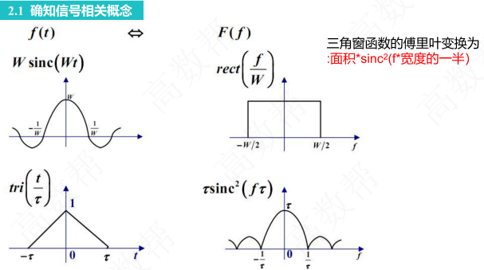
平稳过程的自相关函数¶
1. 自相关函数的定义¶
- 公式：\(R(\tau) = E[\xi(t) \cdot \xi(t + \tau)]\)
- 其中 \(\xi(t)\) 是平稳随机过程（统计特性不随时间变化），\(\tau\) 是时间差，\(E[\cdot]\) 表示期望（平均值）。
- 物理意义：
- 自相关函数衡量信号在不同时刻的“相似性”。例如：
- 当 \(\tau = 0\) 时，\(R(0) = E[\xi^2(t)]\)，表示信号与其自身的相关性（最强）。
- 当 \(\tau\) 很大时（如 \(\tau \to \infty\)），信号在 \(t\) 和 \(t+\tau\) 时刻的值可能不相关（\(R(\tau)\) 很小）。
- 通俗理解：
- 想象一段音乐波形：自相关函数告诉你，如果现在有一个音符，你能多好地预测几秒后的音符。如果波形重复（如鼓点节奏），\(\tau\) 为节拍间隔时 \(R(\tau)\) 会很大；如果杂乱无章（如噪声），\(R(\tau)\) 会快速衰减。
2. 自相关函数的性质与物理量解析¶
(1) \(R(0) = E[\xi^2(t)]\) → ξ(t) 的平均功率
- 物理量：
- \(E[\xi^2(t)]\)：随机过程的平均功率（单位时间内的平均能量）。
- 为什么是平均功率？
- 在信号处理中，任何信号 \(\xi(t)\) 的功率定义为 \(\xi^2(t)\) 的长期平均值（类似电器功耗的计算）。
- 例如：如果 \(\xi(t)\) 是电压信号，则 \(E[\xi^2(t)]\) 表示负载电阻上的平均功率。
- 关键点：
- 对平稳过程，\(R(0)\) 是常数（不依赖 \(t\)），且直接给出总功率。
(2) \(R(\tau) = R(-\tau)\) → τ 的偶函数
- 物理意义：
- 自相关函数是偶函数，即关于 \(\tau = 0\) 对称。
- 通俗理解：
- 信号在“向前 \(\tau\) 秒”和“向后 \(\tau\) 秒”的相关性相同。例如：
- 录音中，向前 2 秒和向后 2 秒的波形相似性一致（平稳过程的特性）。
- 应用：简化计算，只需分析 \(\tau \geq 0\) 的部分。
(3) \(|R(\tau)| \leq R(0)\) → R(τ) 的上界
- 公式修正：\(|R(\tau)| \leq R(0)\)
- 物理意义：
- 自相关函数在 \(\tau = 0\) 处取最大值，且 \(|R(\tau)|\) 不会超过 \(R(0)\)。
- 通俗理解：
- 信号与自身的相关性（\(\tau=0\)）总是最强；时间差越大，相关性越弱（类似“远亲不如近邻”）。
- 例如：天气预报中，今天的温度与明天相关性高（\(R(1)\) 较大），但与下个月相关性低（\(R(30)\) 较小），且永远不会超过今天与自身的相关性。
(4) \(R(\infty) = [E\xi(t)]^2\) → ξ(t) 的直流功率
- 物理量：
- \([E\xi(t)]^2\)：随机过程的直流功率（恒定分量的功率）。
- 为什么？
- 当 \(\tau \to \infty\)，信号在 \(t\) 和 \(t+\tau\) 时刻的值不再相关（假设过程是“混合”的），因此 \(R(\infty) = E[\xi(t)] \cdot E[\xi(t+\tau)] = [E\xi(t)]^2\)（因平稳性，均值恒定）。
- 直流功率对应信号中不随时间变化的“背景值”。
- 例子：
- 若 \(\xi(t)\) 是交流电信号，直流功率是电压均值的平方（如电池的恒定输出）；若均值 \(E\xi(t) = 0\)（如中心化的噪声），则直流功率为 0。
(5) \(R(0) - R(\infty) = \sigma^2\) → ξ(t) 的交流功率
- 物理量：
- \(\sigma^2\)：方差，表示随机过程的交流功率（波动分量的功率）。
- 为什么？
- 总功率 \(E[\xi^2(t)] = R(0)\)。
- 由概率论：\(\text{Var}[\xi(t)] = E[\xi^2(t)] - [E\xi(t)]^2 = R(0) - R(\infty)\)。
- 因此，\(\sigma^2\) 是信号波动部分（去除直流后）的平均功率。
- 通俗理解：
- 总功率 = 直流功率（恒定部分）+ 交流功率（波动部分）。
- 例如：灯泡的总亮度（总功率）= 基础亮度（直流）+ 闪烁强度（交流）。方差 \(\sigma^2\) 越大，信号波动越剧烈。
(6) 当均值为 0 时，\(R(0) = \sigma^2\)
- 公式：若 \(E\xi(t) = 0\)，则 \(R(0) = \sigma^2\)。
- 物理意义：
- 均值 \(E\xi(t) = 0\) 时，直流功率 \(R(\infty) = 0\)，因此总功率 \(R(0)\) 完全等于交流功率 \(\sigma^2\)。
3.广义平稳随机过程的性质¶
\(\begin{aligned}& E[X(t)]=m_{X}=\text { 常数 } \\& D[X(t)]=E\{\left.X(t)-E[X(t)\right]\}^{2}=\sigma_{X}^{2}=\text { 常数 } \\& R_{X}\left(t_{1}, t_{2}\right)=R_{X}\left(t_{1}-t_{2}\right)=R_{X}(\tau) \quad \tau=t_{1}-t_{2}\end{aligned}\)
高斯随机变量与概率密度函数¶
（1）高斯随机变量的定义¶
- 若随机变量 X 的概率密度函数满足：\(f_X(x) = \frac{1}{\sigma \sqrt{2\pi}} \exp\left[ -\frac{(x - \mu)^2}{2\sigma^2} \right]\) 则称 X 服从均值为 \(\mu\)、方差为 \(\sigma^2\) 的正态分布（高斯分布），记为 \(X \sim \mathcal{N}(\mu, \sigma^2)\)。
（2）线性变换下正态分布的不变性¶
-
性质：若 \(X \sim \mathcal{N}(\mu_X, \sigma_X^2)\)，则对任意常数 \(a \neq 0\)、b，线性变换 \(Y = aX + b\) 后的 Y 仍服从正态分布，且：\(Y \sim \mathcal{N}(a\mu_X + b, (a\sigma_X)^2)\)
-
推导逻辑：
可通过 “分布函数法” 或 “特征函数法” 证明：
- 分布函数法：先求 Y 的分布函数 \(F_Y(y) = P(Y \leq y) = P(aX + b \leq y)\)，再对 y 求导得概率密度。
- 特征函数法：正态分布的特征函数为 \(\phi_X(\omega) = \exp\left( j\mu\omega - \frac{1}{2}\sigma^2\omega^2 \right)\)，线性变换后特征函数为 \(\phi_Y(\omega) = \exp\left( j(a\mu + b)\omega - \frac{1}{2}(a\sigma)^2\omega^2 \right)\)，对应正态分布。
（3）期望与方差的线性性质¶
- 期望的线性性：对任意常数 \(a, b\)，有 \(E[aX + b] = aE[X] + b\)。
- 方差的性质：对任意常数 \(a, b\)，有 \(\text{Var}(aX + b) = a^2 \text{Var}(X)\)（因常数的方差为 0，且 \(\text{Var}(aX) = a^2 \text{Var}(X)\) ）。
随机信号的功率谱¶
（1）随机信号通过线性系统的功率谱关系¶
- 公式：若输入随机信号的功率谱密度为 \(P_n(f)\)，线性系统的频率响应幅度为 \(|H(f)|\)，则输出信号的功率谱密度为：\(P_o(f) = P_n(f) \cdot |H(f)|^2\)
- 物理意义：线性系统对输入信号的功率谱进行 “滤波”—— 仅允许与系统频响匹配的频率分量通过，且功率按 \(|H(f)|^2\) 缩放。
（2）平均功率与功率谱密度的关系¶
- 公式：随机信号的平均功率等于其功率谱密度在全频域的积分：\(P = \int_{-\infty}^{\infty} P(f) \, df\)
- 推导逻辑：功率谱密度是 “单位频率的功率”，对频率积分相当于 “累加所有频率点的功率”，最终得到总平均功率。
（3）白噪声的功率谱特性¶
- 定义：白噪声是一种理想随机信号，其功率谱密度在全频域（\(-\infty < f < \infty\)）内为常数，即 \(P_n(f) = n_0/2\)（双边谱，\(n_0\) 为单边谱密度）。
- 白噪声的功率谱密度 \(P_n(f)\) 在全频域平坦，通过带通滤波器后，噪声功率等于 \(P_n(f)\) 乘以滤波器带宽 B（即信号带宽）。
- 工程意义：实际噪声（如热噪声）在一定带宽内可近似为白噪声，简化分析。
（4）低通滤波器的频响特性¶
- 幅频特性：如习题第1章-第3章中第9题中，滤波器在通带 \([-2\ \text{kHz}, 2\ \text{kHz}]\) 内增益为 4，阻带增益为 0，在 \(f \in [-2\ \text{kHz}, 2\ \text{kHz}]\) 内，\(|H(f)| = 4\)；其余频率 \(|H(f)| = 0\)。属于理想低通滤波器（实际滤波器存在过渡带，本题简化为理想情况）。
频谱调制¶
1. 调制带宽的本质¶
调制的作用是将基带信号（调制信号）的频谱搬移到载波频率附近，带宽由频谱搬移后的边带宽度决定。设调制信号为 \(m(t)\)，载波为 \(c(t) = A_c\cos(\omega_c t)\)，不同调制方式的频谱特性差异导致带宽不同。
2. 各调制方式的带宽公式¶
- AM 调制： AM 信号表达式：\(s_{\text{AM}}(t) = [A_c + m(t)]\cos(\omega_c t)\) 频谱包含载波 \(A_c\delta(f \pm f_c)\) 和边带 \(\frac{1}{2}M(f \pm f_c)\)（\(M(f)\) 是 \(m(t)\) 的频谱）。 因 \(m(t)\) 最高频率 \(f_{\text{H}}\)，边带宽度为 \(f_{\text{H}}\)，总带宽：\(B_{\text{AM}} = 2f_{\text{H}}\)
- DSB 调制： DSB 信号表达式：\(s_{\text{DSB}}(t) = m(t)\cos(\omega_c t)\) 频谱仅包含边带 \(\frac{1}{2}M(f \pm f_c)\)（抑制载波），边带宽度 \(f_{\text{H}}\)，总带宽：\(B_{\text{DSB}} = 2f_{\text{H}}\)
- SSB 调制： SSB 信号通过滤波或相移法抑制一个边带，仅保留上边带（\(f_c \sim f_c+f_{\text{H}}\)）或下边带（\(f_c-f_{\text{H}} \sim f_c\)），带宽：\(B_{\text{SSB}} = f_{\text{H}}\)
关键区别：边带数量
- AM、DSB 保留两个边带，带宽由两个边带的总宽度决定（\(2f_{\text{H}}\) ）；
- SSB 仅保留一个边带，带宽等于单个边带的宽度（\(f_{\text{H}}\) ）。
希尔伯特变换¶
（1）希尔伯特变换的定义¶
希尔伯特变换是一种线性变换，对信号 \(m(t)\) 的希尔伯特变换定义为：\(\hat{m}(t) = \mathcal{H}\{m(t)\} = \frac{1}{\pi} \int_{-\infty}^{\infty} \frac{m(\tau)}{t - \tau} d\tau\) 其本质是对信号进行 \(90^\circ\) 相移（所有正频率分量滞后 \(\frac{\pi}{2}\)，负频率分量超前 \(\frac{\pi}{2}\) ，但实际工程中常简化为 “正频率分量相位滞后 \(\frac{\pi}{2}\)” ）。
（2）正弦信号的希尔伯特变换特性¶
对于单频正弦信号 \(m(t) = A\sin(\omega t + \varphi)\) 或 \(m(t) = A\cos(\omega t + \varphi)\)，希尔伯特变换有简洁的相位偏移规律：
- 若 \(m(t) = A\sin(\omega t + \varphi)\)，则 \(\mathcal{H}\{m(t)\} = A\sin\left(\omega t + \varphi - \frac{\pi}{2}\right) = -A\cos\left(\omega t + \varphi\right)\)
- 若 \(m(t) = A\cos(\omega t + \varphi)\)，则 \(\mathcal{H}\{m(t)\} = A\cos\left(\omega t + \varphi - \frac{\pi}{2}\right) = A\sin\left(\omega t + \varphi\right)\)
希尔伯特变换对正弦信号实现精确的 \(90^\circ\) 相移，这是通信中 “单边带调制（SSB）”“解析信号” 等应用的基础。
（3）解析信号与希尔伯特变换的关系¶
希尔伯特变换常用来构造解析信号 \(z(t) = m(t) + j\hat{m}(t)\)，其频谱仅包含正频率分量（负频率分量被抵消），可用于简化调制、滤波等处理。
调频（FM）¶
1. 调频（FM）的基本原理¶
- FM 是角度调制的一种，瞬时频率随调制信号线性变化，表达式为：\(s(t) = A \cos\left(2\pi f_c t + k_f \int m(t) \, dt\right)\) 其中，\(k_f\) 为调频灵敏度（rad/(s・V)），\(m(t)\) 为调制信号。瞬时相位的可变部分（不含载波相位）为：\(\Delta\varphi(t) = k_f \int m(t)\)
- 为得到调制信号 \(m(t)\)，需对 \(\Delta\varphi(t)\) 求导（因积分与求导互为逆运算）：\(\frac{d}{dt}[\Delta\varphi(t)] = \frac{d}{dt}\left[k_f \int m(t) \, dt\right] = k_f m(t)\)
2. 关键参数定义与公式¶
- 瞬时角频率：\(\omega(t) = 2\pi f_c + k_f m(t)\)，体现调制信号对频率的直接影响。
- 最大角频偏：\(\Delta\omega_{\text{max}} = k_f \cdot |m(t)|_{\text{max}}\)，反映频率偏移的最大值，本题中通过相位导数间接推导。
- 调频指数：定义为最大相位偏移或最大频率偏移与调制信号频率之比，\(m_f = \frac{\Delta\omega_{\text{max}}}{\omega_m} = \frac{k_f \cdot |m(t)|_{\text{max}}}{\omega_m}\)，表示最大相位偏移（\(\Delta\varphi_{\text{max}} = m_f\)）。
A律13折线编码¶
1. A 律 13 折线编码的原理¶
A 律 13 折线是脉冲编码调制（PCM）中常用的非均匀量化方法，通过分段线性化近似对数压缩特性，将输入信号的动态范围划分为多个段落，对小信号采用细量化、大信号采用粗量化，以改善小信号的量化信噪比。
2. 8 位二进制编码的结构¶
A 律 13 折线的 8 位编码格式为：1 位符号位 + 3 位段落码 + 4 位段内码，具体说明如下：
| 编码位 | 含义 | 取值范围 |
|---|---|---|
| 第 1 位 | 符号位（表示信号正负） | 0（负）/ 1（正） |
| 第 2-4 位 | 段落码（确定信号所在的段落，共 8 个段落） | 000~111（对应 8 个段落） |
| 第 5-8 位 | 段内码（确定段落内的量化电平，每个段落分为 16 个量化级） | 0000~1111（对应 16 个等级） |
- 段落划分逻辑： 对正半轴信号，按对数规律划分为 7 个段落（负半轴对称），加上原点附近的第 1 段（段 0 和 1 斜率相同合并，正负半轴小信号段合并为 1 条直线，共 13 条折线）。段落码 3 位可表示 \(2^3 = 8\) 个段落，覆盖正负半轴的所有分段。
以最小量化间隔 Δ=1为单位，正半轴段落参数：
| 段落号 | 起始点 | 结束点 | 步长 | 段内间隔数 | 段落码 |
|---|---|---|---|---|---|
| 0 | 0 | 16 | 1 | 16 | 000 |
| 1 | 16 | 32 | 1 | 16 | 001 |
| 2 | 32 | 64 | 2 | 16 | 010 |
| 3 | 64 | 128 | 4 | 16 | 011 |
| 4 | 128 | 256 | 8 | 16 | 100 |
| 5 | 256 | 512 | 16 | 16 | 101 |
| 6 | 512 | 1024 | 32 | 16 | 110 |
| 7 | 1024 | 2048 | 64 | 16 | 111 |
-
段内量化： 每个段落等分为 16 个量化级，4 位段内码可表示 \(2^4 = 16\) 个等级，确定具体量化电平。
-
译码电平：取量化间隔中点，需要结合极性。
-
量化误差：∣输入值−译码电平∣。最大误差小于步长一半（因取中点）。
3. 8 位编码的数学意义¶
- 总量化电平数：\(2 \times 8 \times 16 = 256\) 级（正负半轴各 8 段落 ×16 级），对应 \(2^8 = 256\)，故需 8 位编码。
- 编码与量化间隔的关系：
- 段落码决定量化间隔的倍数（大段落对应大间隔，小段落对应小间隔）；
- 段内码在段落内均匀划分量化级，例如第 1 段（小信号区）的量化间隔最小，第 8 段（大信号区）的间隔最大，实现非均匀量化。
4. 与均匀量化的对比¶
- 均匀量化：若量化电平数为 256，需 8 位编码，但所有区间量化间隔相同；
- A 律 13 折线：8 位编码结合非均匀分段，用更少的位数实现对小信号的精细量化，等效提升小信号的量化信噪比。
横向滤波器¶
1. 横向滤波器（Transversal Filter）¶
- 定义：一种由抽头延迟线、乘法器和加法器组成的线性滤波器，通过加权求和处理输入信号，常用于信号均衡、信道补偿等场景。
- 结构特点：包含 \(2N+1\) 个抽头，每个抽头对应一个延迟单元和系数 \(C_n\)。
2. 均衡器的基本原理¶
- 目的：补偿信道失真，减少码间串扰（ISI），使输出信号更接近原始信号。
- 工作机制：通过调整滤波器系数，对输入信号的不同延迟分量进行加权，抵消信道引起的波形展宽。
3. 卷积与滤波器输出的关系¶
横向滤波器的输出本质是输入信号与滤波器系数的离散卷积，即：\(y(k) = x(k) * h(k) = \sum_{n=-\infty}^{\infty} x(n) \cdot h(k-n)\) 其中 \(h(k) = \{C_{-1}, C_0, C_{+1}\}\) 为滤波器的单位冲激响应。如果输入信号有限长，卷积计算简化为有限项求和。每个系数 \(C_n\) 对应延迟 n 个时间点的输入，计算 \(y_k\) 时，输入的时间点是 \(k-n\)。
4. 码间串扰（ISI）与均衡的意义¶
- 码间串扰：由于信道带宽限制，当前码元的波形会扩散到相邻码元周期，导致抽样点信号叠加干扰。
- 均衡作用：通过滤波器设计，使目标抽样点的信号能量最大化，非目标点的干扰最小化。
迫零均衡器¶
1. 码间串扰 (ISI)¶
码间串扰是指数字通信系统中，当前码元的波形受到前后码元波形干扰的现象。它由信道的频率选择性衰落或多径传播引起，会导致接收端判决错误。
2. 均衡器与迫零准则¶
-
均衡器：用于补偿信道失真、减小码间串扰的信号处理装置
-
迫零均衡器：通过在特定采样点使码间串扰严格为零的均衡器设计方法，使得整体脉冲响应在指定采样时刻（除主采样点外）为零，从而消除 ISI。
-
数学模型：设信道冲激响应为\(x_n\)，均衡器冲激响应为\(h_n\)，则均衡器输出为： \(y_n = \sum_{k} x_k \cdot h_{n-k}\)
-
迫零条件：通常设置 \(y[0] = 1\)（归一化主采样点），并在相邻点强制 ISI 为零。 对于 3 抽头均衡器，常设： $$ y[-1] = 0,\quad y[0] = 1,\quad y[1] = 0 $$
3. 峰值失真 (Peak Distortion)¶
- 未均衡时： \(D = \frac{1}{|x_0|} \sum_{\substack{k=-\infty \\ k\neq 0}}^{\infty} |x_k|\)
- 均衡后： \(D' = \frac{1}{|y_0|} \sum_{\substack{k=-\infty \\ k\neq 0}}^{\infty} |y_k|\) 其中\(y_n\)为均衡器输出信号的采样值。
眼图¶
利用示波器的余辉效应，评价接收信号质量的方法。

AMI/HDB3编码¶
AMI 码（交替反转码）¶
1. 编码规则¶
- 空号（0）：直接映射为 0 电平；
- 传号（1）：交替映射为 + 1 和 - 1 电平，即相邻 “1” 的极性相反。
例：二进制序列 1 0 1 1 0 0 1
→ AMI 码：+1 0 -1 +1 0 0 -1
2. 特点与优势¶
- 直流平衡：由于 “1” 的极性交替，信号平均功率为零，消除了直流分量，适合变压器耦合传输；
- 简单易实现：编码规则直观，硬件实现成本低；
- 错误检测：若极性交替规律被破坏（如连续两个同极性 “1”），可直接检测传输错误。
3. 局限性¶
- 长连 0 问题：当二进制序列中出现长串 “0” 时，AMI 码波形长时间无跳变，导致接收端难以提取时钟同步信号（时钟恢复困难）。
HDB3 码（高密度双极性 3 码）¶
1. 设计目的¶
解决 AMI 码中长连 0 导致的同步困难，同时保持直流平衡特性。
2. 编码规则¶
- 基本规则：继承 AMI 码的极性交替原则（相邻 “1” 极性相反），但当出现 4 个连续 “0” 时，用特定 “取代节” 替换，避免长连 0。
- 取代节类型：
- 若当前非 0 码（“1”）的极性为 “+”，则记为 “+1”，反之记为 “-1”；
- 设最近一个非 0 码的极性为 \(V_{\text{prev}}\)，取代节有两种形式：
- B00V：当取代前非 0 码的极性累积数（“+” 和 “-” 的数量差）为偶数时使用；
- 000V：当累积数为奇数时使用；
- V 码（破坏码）：极性与前一个非 0 码 相同（打破 AMI 的交替规则），和前面相邻的V极性相反，用于标识取代节，同时确保整个序列的极性交替在宏观上成立。
- B 码（平衡码）：极性符合 AMI 的交替规则，用于调整极性累积数，使整体直流平衡。
3. 编码示例¶
二进制序列：1 0 0 0 0 1 0 0 0 0 0 0 1 步骤：
- 识别 4 个连续 “0” 的位置：第 2-5 位、第 7-10 位（后 4 位 “0” 实际为 6 个连续 “0”，需拆分为两组 4 个 “0”）；
- 第一个 4 连 0：最近非 0 码为 “+1”（第 1 位），极性累积数为 1（奇数），用 “000V” 取代，V 码极性与前非 0 码相同（+1），得：
+1 0 0 0 +V； - 第二个 4 连 0：前一个非 0 码为 “-1”（第 6 位，按 AMI 规则交替），极性累积数为 0（偶数），用 “B00V” 取代，B 码极性按 AMI 规则应为 “+1”，V 码极性与前非 0 码相同（-1），得：
-1 +B 0 0 -V； - 最终 HDB3 码：
+1 0 0 0 +V -1 +B 0 0 -V 0 +1（注：实际编码中需严格遵循极性交替和累积数平衡）。
4. 特点与优势¶
- 无长连 0：最长连 0 数不超过 3，保证时钟同步信号的提取；
- 直流平衡：通过 V 码和 B 码的极性调整，整体信号仍无直流分量；
- 错误检测：V 码破坏极性交替规则，可用于检测传输错误；
- 兼容性：与 AMI 码兼容，解码端可轻松还原为 AMI 码或原始二进制序列。
其他编码（双相码、CIM码）¶
双相码通常指曼彻斯特编码，它将每个二进制码元分成两个相等的间隔。“0” 码用 “01” 表示，即在位中间从低电平跳变到高电平；“1” 码用 “10” 表示，在位中间从高电平跳变到低电平。
CMI码：“1” 用 11、00 交替表示，“0” 用 01 表示。

数字调制¶
几种不同的数字调制方式¶
1. 2ASK（二进制振幅键控）
- 定义：通过改变载波信号的振幅来表示二进制数字信号 “0” 和 “1”。
- 原理：
- 当传输 “1” 时，发送载波信号（振幅为 A）；
- 当传输 “0” 时，不发送载波信号（振幅为 0）。
- 示例：类似 “开关” 控制，如光通信中的开关键控（OOK）。
2. 2PSK（二进制相移键控）
- 定义：通过改变载波信号的相位来表示二进制信息。
- 原理：
- 通常用 0° 相位表示 “1”，180° 相位表示 “0”（或反之）。
- 特点：相位差为 180°，属于绝对相移调制。
3. 2FSK（二进制频移键控）
- 定义：通过改变载波信号的频率来表示二进制数据。
- 原理：
- 用频率 f1 表示 “1”，频率 f2 表示 “0”，两个频率间隔 Δf 需满足正交条件。
- 示例：早期 Modem（拨号上网）中常用此方式。
4. 2DPSK（二进制差分相移键控）
- 定义：基于 2PSK 的改进，通过前后码元的相位差来表示信息，属于相对相移调制。
- 原理：
- 不直接使用绝对相位，而是用当前码元与前一码元的相位差（如 0° 表示 “0”，180° 表示 “1”）。
- 目的：解决 2PSK 的 “相位模糊” 问题（接收端可能误判绝对相位基准）。
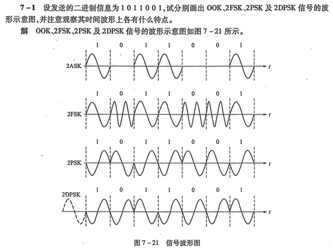
2PSK ——1、0变换时，交界处变载频相位。
2DPSK——0不变，1变，遇到1，变换载频相位。
2ASK——只有1有载频。
2FSK——1低载频，2高载频。
核心技术指标对比¶
| 指标 | 2ASK | 2PSK | 2FSK | 2DPSK |
|---|---|---|---|---|
| 调制参数 | 振幅 | 相位 | 频率 | 相位差 |
| 抗噪声性能 | 较差（振幅易受噪声影响） | 最佳（相位信息更稳定） | 中等（频率区分需足够间隔） | 接近 2PSK（略低） |
| 带宽需求 | 理论带宽 = 2× 码元速率 | 理论带宽 = 2× 码元速率 | 理论带宽 =Δf+2× 码元速率 | 同 2PSK |
| 频谱效率 | 高（带宽利用率高） | 高 | 低（需额外频率间隔） | 高 |
| 实现复杂度 | 简单（硬件要求低） | 中等（需相位基准） | 中等（需频率合成器） | 中等（需差分编码） |
| 相位模糊问题 | 无 | 有（接收端可能误判 0°/180°） | 无 | 无（差分编码消除基准依赖） |
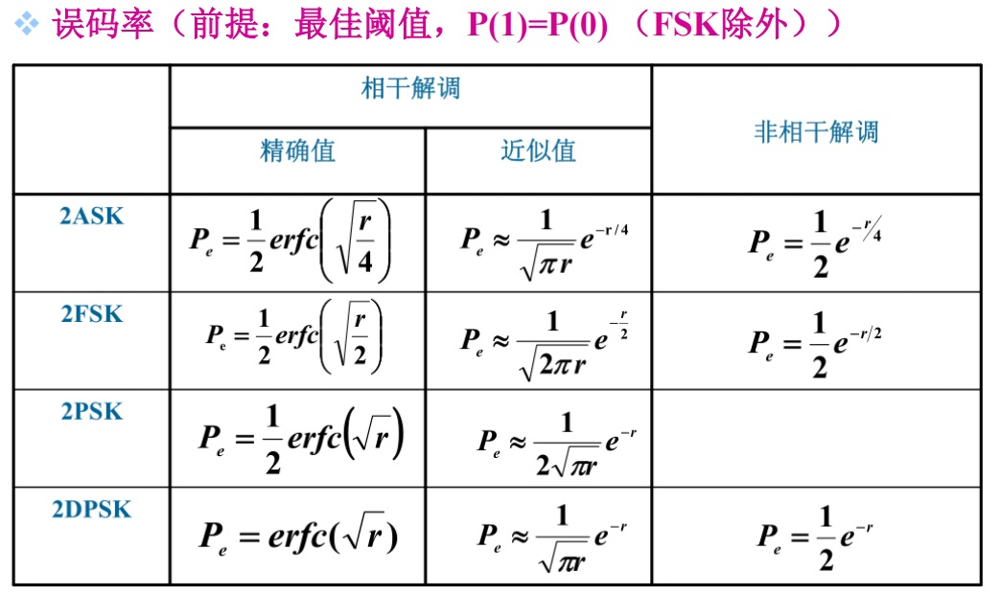
通信原理习题¶
第1章-第3章¶
1.某通信系统在接收端测得接收信号功率为 2W，若已知噪声功率为 2×10⁻³W，则该系统的接收端信噪比 \(r = \boxed{30}\) dB。
Note
接收端信噪比 r 的计算公式为：\(r = 10 \log_{10}\left(\frac{P_s}{P_n}\right)\) 其中，\(P_s = 2\ \text{W}\) 为信号功率，\(P_n = 2 \times 10^{-3}\ \text{W}\) 为噪声功率。代入得：\(r = 10 \log_{10}\left(\frac{2}{2 \times 10^{-3}}\right) = 10 \log_{10}(1000) = 10 \times 3 = 30\ \text{dB}\)
- 信噪比（SNR） 定义为信号功率与噪声功率的比值，反映信号在噪声环境中的质量。
- 用分贝（dB）表示时，公式为 \(10 \log_{10}(P_s/P_n)\)，目的是将大范围的功率比转换为更易处理的数值。
2.传输十六进制独立等概信号的码元宽度为 0.5ms，则其传码率 \(R_{\text{B}}=\boxed{2000}\) Baud；信息速率 \(R_{b}=\boxed{8000}\) bit/s。
Note
传码率 \(R_{\text{B}}\)： 码元宽度 \(T = 0.5\ \text{ms} = 0.5 \times 10^{-3}\ \text{s}\)，传码率定义为单位时间内传输的码元数：\(R_{\text{B}} = \frac{1}{T} = \frac{1}{0.5 \times 10^{-3}} = 2000\ \text{Baud}\)
信息速率 \(R_b\)： 十六进制信号每个码元携带的信息量为 \(\log_2(16) = 4\ \text{bit}\)，故信息速率为：\(R_b = R_{\text{B}} \times \log_2(M) = 2000 \times 4 = 8000\ \text{bit/s}\)
- 传码率（波特率） 表示单位时间内传输的码元个数，单位为波特（Baud），与码元宽度成反比：\(R_{\text{B}} = 1/T\)。
- 信息速率 表示单位时间内传输的信息量，单位为 bit/s。对于 M 进制等概信号，每个码元的信息量为 \(\log_2(M)\) bit，故 \(R_b = R_{\text{B}} \times \log_2(M)\)。
3.如果随机过程的 \(\boxed{均值}\) 与时间无关，而且 \(\boxed{自相关函数}\) 仅与时间间隔有关，那么该随机过程就称为广义平稳的。
Note
自相关函数是用来描述同一个信号在不同时刻的相似程度的数学工具。
对于信号 \(x(t)\)，自相关函数 \(R(\tau)\) 定义为：\(R(\tau) = E[x(t) \cdot x(t+\tau)]\) 其中 \(\tau\) 是时间间隔，\(E[~]\) 表示期望（可简单理解为平均乘积）。
- 当 \(\tau=0\) 时，\(R(0) = E[x^2(t)]\)，即信号的能量（或功率），此时相关性最强。
- 当 \(\tau\)增大时，\(R(\tau)\)反映信号在时间间隔\(\tau\)内的 “记忆程度”：
- 若信号变化慢（如低频信号），不同时刻的波形相似，\(R(\tau)\) 随 \(\tau\) 增大缓慢下降；
- 若信号变化快（如高频噪声），波形迅速改变，\(R(\tau)\) 随 \(\tau\) 增大快速趋近于 0。
4.某信号的自相关函数为 \(R(\tau)=3g_4(\tau)\) (\(g\) 为门函数)，则其功率谱密度为 \(\boxed{12⋅Sa(2ω)}\)。
Note
根据维纳 - 辛钦定理，功率谱密度 \(S(\omega)\) 是自相关函数 \(R(\tau)\) 的傅里叶变换：\(S(\omega) = \int_{-\infty}^{\infty} R(\tau) e^{-j\omega\tau} d\tau\) 已知 \(R(\tau) = 3g_4(\tau)\)，其中 \(g_4(\tau)\) 为宽度 4 的门函数（即 \(g_4(\tau) = 1\) 当 \(|\tau| \leq 2\)，否则为 0），其傅里叶变换为：\(\mathcal{F}\{g_4(\tau)\} = 4 \cdot \text{Sa}(2\omega) = 4 \cdot \frac{\sin(2\omega)}{2\omega} = \frac{2\sin(2\omega)}{\omega}\) 因此：\(S(\omega) = 3 \times 4 \cdot \text{Sa}(2\omega) = 12 \cdot \frac{\sin(2\omega)}{2\omega} = 6 \cdot \frac{\sin(2\omega)}{\omega}\)
- 维纳 - 辛钦定理：建立了随机过程时域自相关函数与频域功率谱密度的一一对应关系，是信号频域分析的核心理论之一。
- 门函数的傅里叶变换：宽度为T的门函数 \(g_T(\tau)\) 的傅里叶变换为 \(T \cdot \text{Sa}(\omega T/2)\)，其中 \(\text{Sa}(x) = \sin(x)/x\)。
5.设均值为 0，方差为 \(\sigma^2=20\) 的窄带平稳高斯随机过程 \(\xi(t)=a_{\xi}(t)cos [\omega_c t+\varphi_{\xi}(t)]\)，其同相分量为 \(\boxed{(a_{\xi}(t)\cos\varphi_{\xi}(t))}\)，正交分量为 \(\boxed{(a_{\xi}(t)\sin\varphi_{\xi}(t))}\)，该随机过程的平均功率为 \(\boxed{20}\)。
Note
窄带过程可表示为：\(\xi(t) = x(t)\cos\omega_c t - y(t)\sin\omega_c t\)
利用三角函数公式展开 \(\xi(t)\)：\(\xi(t) = a_{\xi}(t)\cos\varphi_{\xi}(t)\cos\omega_c t - a_{\xi}(t)\sin\varphi_{\xi}(t)\sin\omega_c t\) 定义：
- 同相分量：
\(x(t) = a_{\xi}(t)\cos\varphi_{\xi}(t)\)
与载波 \(\cos\omega_c t\) 同相位，故称为 “同相”（In-Phase, I 路）。
正交分量：
\(y(t) = a_{\xi}(t)\sin\varphi_{\xi}(t)\)
- 与载波 \(\sin\omega_c t\) 同相位，和载波 \(\cos\omega_c t\) 相差 \(90^\circ\)（正交），故称为 “正交”（Quadrature, Q 路）。
平均功率是信号在长时间内的平均能量。数学上，对于平稳过程，它是 \(E\left[\xi^{2}(t)\right]\)（均方值）。
- 计算：由于均值是 0, 方差 \(\sigma^{2}=E\left[\xi^{2}(t)\right]-\{E[\xi(t)]\}^{2}=E\left[\xi^{2}(t)\right]\), 因此平均功率\(E[\xi^2(t)]\) = 方差 = 20 。
6.某信号 \(m(t)\) 的双边功率谱密度如图所示，求其平均功率。
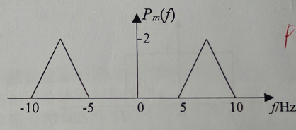
信号的平均功率 P 等于其双边功率谱密度 \(P_m(f)\) 在整个频率轴 \((-\infty, +\infty)\) 上的积分，即：\(P = \int_{-\infty}^{\infty} P_m(f) \, df\) 对于此题，两侧三角形总面积即为平均功率：\(P = 2 \times 5 = \boxed{10\ \text{W}}\)
7.已知某八进制数字通信系统的信息速率为 \(3000 \text{bit/s}\)，在收端 \(10\) 分钟内共测得出现 \(18\) 个错误码元，求该系统的误码率。
Note
- 信息速率 \(R_b = 3000\ \text{bit/s}\)（八进制系统）；时间 \(t = 10\ \text{分钟} = 10 \times 60 = 600\ \text{s}\)；错误码元数 \(N_e = 18\)
- 八进制（\(M = 8\)）系统中，信息速率 \(R_b\) 与传码率 \(R_B\) 的关系为：\(R_b = R_B \cdot \log_2 M\) 代入 \(M = 8\)（\(\log_2 8 = 3\)），可得：\(R_B = \frac{R_b}{\log_2 M} = \frac{3000}{3} = 1000\ \text{Baud}\)
- 传码率 \(R_B\) 表示单位时间传输的码元数，因此总码元数 N 为：\(N = R_B \cdot t = 1000 \times 600 = 6 \times 10^5\ \text{码元}\)
- 误码率定义为错误码元数与总码元数的比值：\(P_e = \frac{N_e}{N}\) 代入 \(N_e = 18\)，\(N = 6 \times 10^5\)，得：\(P_e = \frac{18}{6 \times 10^5} = \boxed{3 \times 10^{-5}}\)
8.设 \(X\) 是均值 \(\mu_{X}=5\) ，均方差 \(\sigma_{X}=3\) 的高斯随机变量，求随机变量 \(Y=3 X+2\) 的概率密度函数 \(f(y)\)
Note
高斯随机变量 X 的概率密度函数为：\(f_X(x) = \frac{1}{\sigma_X \sqrt{2\pi}} \exp\left[ -\frac{(x - \mu_X)^2}{2\sigma_X^2} \right]\) 代入 \(\mu_X = 5\)，\(\sigma_X = 3\)，得：\(f_X(x) = \frac{1}{3\sqrt{2\pi}} \exp\left[ -\frac{(x - 5)^2}{2 \times 9} \right] = \frac{1 }{3\sqrt{2\pi}} \exp\left[ -\frac{(x - 5)^2}{18} \right]\)
- 若 \(X \sim \mathcal{N}(\mu_X, \sigma_X^2)\)（正态分布，均值 \(\mu_X\)，方差 \(\sigma_X^2\) ），则线性变换 \(Y = aX + b\)（\(a \neq 0\) ）后的随机变量 Y 仍服从正态分布，且：\(Y \sim \mathcal{N}(a\mu_X + b, (a\sigma_X)^2)\)
均值（期望）： 由期望的线性性质 \(E[Y] = E[aX + b] = aE[X] + b\)，代入 \(a = 3\)，\(b = 2\)，\(\mu_X = 5\)，得：\(\mu_Y = 3 \times 5 + 2 = 17\)
方差： 由方差的性质 \(\text{Var}(Y) = \text{Var}(aX + b) = a^2 \text{Var}(X)\)（常数不影响方差），代入 \(a = 3\)，\(\sigma_X^2 = 9\)，得：\(\sigma_Y^2 = 3^2 \times 9 = 81 \implies \sigma_Y = 9\)
因 Y 服从正态分布 \(\mathcal{N}(\mu_Y, \sigma_Y^2) = \mathcal{N}(17, 81)\)，其概率密度函数为：\(f_Y(y) = \frac{1}{\sigma_Y \sqrt{2\pi}} \exp\left[ -\frac{(y - \mu_Y)^2}{2\sigma_Y^2} \right]\) 代入 \(\mu_Y = 17\)，\(\sigma_Y = 9\)，得：\(f_Y(y) = \frac{1}{9\sqrt{2\pi}} \exp\left[ -\frac{(y - 17)^2}{2 \times 81} \right] = \boxed{\frac{1}{9\sqrt{2\pi}} \exp\left[ -\frac{(y - 17)^2}{162} \right]}\)
9.设白噪声的双边功率谱密度为 \(P_n(f) = 2.5 \times 10^{-7} \, \text{W/Hz}\)，通过如下低通滤波器，画出其双边功率谱密度，求其平均功率。

Note
根据随机信号通过线性系统的功率谱密度关系：\(P_o(f) = P_n(f) \cdot |H(f)|^2\)
当 \(f \in [-2\ \text{kHz}, 2\ \text{kHz}]\) 时：\(P_n(f) = 2.5 \times 10^{-7}\ \text{W/Hz}\)，\(|H(f)| = 4\)，因此：\(P_o(f) = 2.5 \times 10^{-7} \times 4^2 = 2.5 \times 10^{-7} \times 16 = 4 \times 10^{-6}\ \text{W/Hz}\)
当 \(f \notin [-2\ \text{kHz}, 2\ \text{kHz}]\) 时：\(|H(f)| = 0\)，因此 \(P_o(f) = 0\)。
根据\(P_o(f)\)进行画图，图像为一个门函数，x轴单位为\(\text{kHz}\)，y轴单位为\(\text{W/Hz}\)
平均功率等于输出功率谱密度在全频域的积分：\(P_o = \int_{-\infty}^{\infty} P_o(f) \, df\)
由于 \(P_o(f)\) 仅在 \(f \in [-2\ \text{kHz}, 2\ \text{kHz}]\) 内非零，积分范围可简化为 \([-2\ \text{kHz}, 2\ \text{kHz}]\)，且功率谱密度对称，因此：\(P_o = 2 \times \int_{0}^{2\ \text{kHz}} P_o(f) \, df\)
代入 \(P_o(f) = 4 \times 10^{-6}\ \text{W/Hz}\)，积分得：\(P_o = 2 \times \left( 4 \times 10^{-6} \times 2 \times 10^3 \right) = 2 \times 8 \times 10^{-3} = 1.6 \times 10^{-2}\ \text{W} = \boxed{0.016\ \text{W}}\)
第5章¶
1.对最高频率为 \(f_{\text{H}}\) 的调制信号分别进行 AM、DSB、SSB 调制，则三种已调信号的带宽分别为（ A ）。
A. \(2f_{\text{H}}\)，\(2f_{\text{H}}\)，\(f_{\text{H}}\)
B. \(f_{\text{H}}\)，\(2f_{\text{H}}\)，\(f_{\text{H}}\)
C. \(2f_{\text{H}}\)，\(2f_{\text{H}}\)，\(2f_{\text{H}}\)
D. \(f_{\text{H}}\)，\(2f_{\text{H}}\)，\(2f_{\text{H}}\)
Note
- AM 调制： AM 信号频谱包含载波分量、上边带（调制信号正频率分量搬移）和下边带（调制信号负频率分量搬移）。调制信号最高频率为 \(f_{\text{H}}\)，则上边带和下边带带宽各为 \(f_{\text{H}}\)，总带宽为 \(2f_{\text{H}}\)。
- DSB 调制： DSB 信号抑制了载波，仅保留上边带和下边带，带宽由两个边带决定，同样为 \(2f_{\text{H}}\)（上边带 \(f_{\text{c}} \sim f_{\text{c}}+f_{\text{H}}\)，下边带 \(f_{\text{c}}-f_{\text{H}} \sim f_{\text{c}}\)，总带宽 \(2f_{\text{H}}\) ）。
- SSB 调制： SSB 信号仅保留一个边带（上边带或下边带），因此带宽等于调制信号最高频率 \(f_{\text{H}}\)（如保留上边带，带宽为 \(f_{\text{H}}\) ）。
2.对下述载波电话多路复用系统框图的描述，不正确的是（ B ）。

A、发送端各调制器的载频设置必须遵循保护频带原则。
B、发送端低通滤波器的作用是滤除带外噪声。
C、该框图只适用于模拟信号的多路传输，不适用于数字信号的多路传输。
D、接收端的各路带通滤波器用来过滤每路SSB信号，因此中心频率各不相同。
Note
发送端各调制器载频 \(f_{c1}, f_{c2}, \dots, f_{cn}\) 需遵循保护频带原则—— 相邻边带间预留空白频段，避免频谱重叠导致干扰。
发送端低通滤波器（LPF）的作用是限制消息信号的最高频率（限制信号带宽，如语音信号限带至 3.4kHz），而非 “滤除带外噪声”（噪声抑制更多由信道或后续滤波处理）。
接收端带通滤波器（BPF）中心频率对应各路载频 \(f_{c1}, f_{c2}, \dots, f_{cn}\)，用于分离不同路的 SSB 信号（每路占据不同频段）。
3.将信号 \(m(t) = 2\sin(20\pi t + \frac{\pi}{4})\) 进行希尔伯特变换，则输出信号为 \(\boxed{\left(2\sin\left(20\pi t - \frac{\pi}{4}\right)\right)}\)。
Note
- 希尔伯特变换（Hilbert Transform，HT）对正弦信号的作用是相位滞后 \(\frac{\pi}{2}\)（或超前 \(\frac{3\pi}{2}\)，等价）。即：\(\mathcal{H}\left\{ A\sin(\omega t + \varphi) \right\} = A\sin\left(\omega t + \varphi - \frac{\pi}{2}\right)\)
对于信号 \(m(t) = 2\sin\left(20\pi t + \frac{\pi}{4}\right)\) ，代入 \(A = 2\)，\(\omega = 20\pi\)，\(\varphi = \frac{\pi}{4}\)，得：\(\mathcal{H}\{m(t)\} = 2\sin\left(20\pi t + \frac{\pi}{4} - \frac{\pi}{2}\right) = 2\sin\left(20\pi t - \frac{\pi}{4}\right)\)
4.设基带信号带宽为 5kHz，对其进行上边带调制，载频为 20kHz。则接收端带通滤波器的中心频率为 \(\boxed{22.5kHz}\)，带宽为 \(\boxed{5kHz}\)。若信道双边功率谱密度为 \(P_n(f) = 5 \times 10^{-5} \text{W/Hz}\)，则解调器输入端的噪声功率为 \(\boxed{(0.5) \text{W}}\)。
Note
上边带调制（SSB）后，信号频谱搬移到载波频率 \(f_c = 20\ \text{kHz}\) 的上边带，即信号占据频率范围为 \(f_c \sim f_c + f_{\text{H}}\)（\(f_{\text{H}} = 5\ \text{kHz}\) 是基带信号最高频率 ）。带通滤波器需提取该上边带信号，因此中心频率等于上边带的中心频率，即：\(f_0 = f_c + \frac{f_{\text{H}}}{2} = 20\ \text{kHz} + \frac{5\ \text{kHz}}{2} = 22.5\ \text{kHz}\)
上边带调制（SSB）的信号带宽等于基带信号带宽 \(f_{\text{H}}\)，因此带通滤波器的带宽需与信号带宽匹配，即：\(B = f_{\text{H}} = 5\ \text{kHz}\)
信道噪声为加性白噪声，其双边功率谱密度 \(P_n(f) = 5 \times 10^{-5}\ \text{W/Hz}\)。解调器输入端的噪声功率等于噪声功率谱密度在信号带宽内的积分。因 SSB 信号带宽 \(B = 5\ \text{kHz}\)，且噪声是双边谱，需注意积分范围：若为双边带噪声功率，对于带通信号，噪声功率计算为：\(N_i = 2\int_{f_c - \frac{B}{2}}^{f_c + \frac{B}{2}} P_n(f) \, df\)
代入 \(P_n(f) = 5 \times 10^{-5}\ \text{W/Hz}\)，\(B = 5\ \text{kHz} = 5 \times 10^3\ \text{Hz}\)，得：\(N_i = 2P_n(f) \times B = 5 \times 10^{-5} \times 5 \times 10^3 = 0.25\ \text{W}\)
5.求 FM 信号 \(s(t) = \cos(2\pi f_c t + 4 \cos 200\pi t)\) 的最大角频偏和调频指数。
Note
- 最大角频偏（\(\Delta \omega_{\text{max}}\)）是 FM 信号瞬时角频率相对于载波角频率的最大偏移量。
给定信号：\(\begin{gathered} s(t)=\cos \left(2 \pi f_{c} t+4 \cos 200 \pi t\right) \end{gathered}\)
瞬时相位 \(\varphi_{i}(t)\) 为：\(\begin{gathered} \varphi_{i}(t)=2 \pi f_{c} t+4 \cos 200 \pi t \end{gathered}\)
瞬时角频率 \(\omega_{i}(t)\) 是瞬时相位对时间的导数：
\(\begin{gathered} \omega_{i}(t)=\frac{d}{d t} \varphi_{i}(t)=\frac{d}{d t}\left(2 \pi f_{c} t+4 \cos 200 \pi t\right) \end{gathered}\)
计算导数：
\(\begin{gathered} \omega_{i}(t)=2 \pi f_{c}+4 \cdot(-200 \pi) \sin (200 \pi t)=2 \pi f_{c}-800 \pi \sin (200 \pi t) \end{gathered}\)
角频偏 \(\Delta \omega(t)\) 是瞬时角频率与载波角频率 \(\omega_{c}=2 \pi f_{c}\) 的差值：
\(\begin{gathered} \Delta \omega(t)=\omega_{i}(t)-\omega_{c}=-800 \pi \sin (200 \pi t) \end{gathered}\)
\(\sin (200 \pi t)\) 的取值范围为 \([-1,1]\)，因此角频偏的绝对值的最大值为：
\(\begin{gathered} \left|\Delta \omega(t)\right|_{\max }=|-800 \pi| \cdot|\sin (200 \pi t)|_{\max }=800 \pi \end{gathered}\)
故最大角频偏为：\(\begin{gathered} \Delta \omega_{\max }=800 \pi \text { rad/s } \end{gathered}\)
- 调频指数定义为最大相位偏移或最大频率偏移与调制信号频率之比。
最大相位偏移法:相位偏移 \(\phi(t) = 4 \cos 200 \pi t\)，其最大值为:
\(|\phi(t)|_{\max} = |4| \cdot |\cos 200 \pi t|_{\max} = 4\)
在 FM 中, 调频指数 \(m_f\) 等于最大相位偏移:\(m_f= \phi_{\max} = 4\)
或者：\(m_f = \frac{\Delta\omega_{\text{max}}}{\omega_m}\) 其中，调制信号的角频率 \(\omega_m = 200\pi\ \text{rad/s}\)（由 \(4 \cos 200\pi t\) 中的 \(200\pi\) 得出）。
代入得：\(m_f = \frac{800\pi}{200\pi} = 4\)
6.已知均值为零的基带信号 \(m(t)\) 的频谱如图所示，载频 \(f_c \gg f_m\)，试画出下边带已调信号 \(S_{LSB}(t)\) 的频谱 \(S_{LSB}(f)\)。

Note
对于基带信号 \(m(t)\)，DSB 信号的频谱为：\(S_{\text{DSB}}(f) = \frac{1}{2} M(f - f_c) + \frac{1}{2} M(f + f_c)\)
- SSB 通过滤波从 DSB 信号中提取一个边带:
- 下边带 (LSB)：保留 \(M(f + f_c)\) (负频率部分) 和 \(M(f - f_c)\) 的镜像 (正频率部分)。
- 频谱表达式:
LSB 频谱是 DSB 频谱的一半（因另一半边带被滤除）:
$ S_{LSB}(f) = \begin{cases} \frac{1}{2} M(f + f_c) & \text{for } f \in [−f_c, −f_c + f_m] \ \frac{1}{2} M(f - f_c) & \text{for } f \in [f_c - f_m, f_c] \ 0 & \text{elsewhere} \end{cases} $
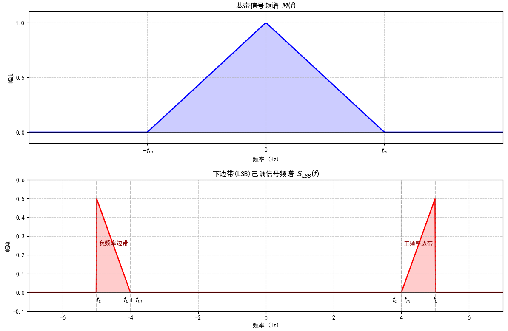
第10章¶
1.设低频模拟信号的频率范围为0~20kHz，则可以无失真恢复信号的最小采样频率为 \(\boxed{40}\) kHz。
Note
对于带宽为 \(f_m\) 的低通模拟信号（频率范围 \(0 \sim f_m\) ），为了能够从采样信号中无失真恢复原始信号，采样频率 \(f_s\) 需满足：\(f_s \geq 2f_m\)
2.模拟信号\(m(t)\)的取值范围为[-5,5] ，对其采样后进行均匀量化，设量化电平数\(M\)=20，则量化间隔为 \(\boxed{0.5}\) 。
Note
均匀量化是将模拟信号的取值范围 等间隔划分，每个间隔对应一个量化电平。设模拟信号的取值范围为 \([a, b]\)，量化电平数为 M，则量化间隔（也称为量化步长）\(\Delta\) 的计算公式为：\(\Delta = \frac{b - a}{M}\)
将 \(a = -5\)、\(b = 5\)、\(M = 20\) 代入公式：\(\Delta = \frac{5 - (-5)}{20} = \frac{10}{20} = 0.5\)
3.均匀量化的量化间隔\(\Delta v\)为确定值时，如果输入信号幅值在正常量化区内变化，其最大量化误差为 ( B )。
A、\(\Delta v\) B、\(\frac{\Delta v}2\) C、\(\frac{\Delta v}4\) D、\(2 \Delta v\)
Note
均匀量化的量化误差（量化噪声）的最大值为 \(\Delta/2\)（信号落在子区间中点时误差最小，落在端点时误差最大为 \(\Delta v/2\) ）。
4.与均匀量化相比，非均匀量化（ D ）。
A. 降低了系统复杂度。 B. 主要改善了大信号的量化信噪比。 C. 扩大了达到某种信噪比要求的信号动态范围。 D. 改善了小信号的量化信噪比。
Note
均匀量化：量化间隔 \(\Delta\) 固定，对所有幅度的信号使用相同的量化精度。 非均匀量化：量化间隔 \(\Delta\) 随信号幅度变化 ——小信号时量化间隔小，大信号时量化间隔大。
5.量化会产生量化噪声，衡量量化噪声对系统通信质量影响的指标是（ D ）。
A. 量化噪声功率 B. 量化信号功率 C. 量化间隔大小 D. 量化信噪比
Note
量化间隔 \(\Delta\) 是量化噪声的影响因素（均匀量化中，量化噪声功率 \(N_q \propto \Delta^2\)），但并非直接衡量噪声影响的指标。因此 C 错误。
量化信噪比（Signal-to-Quantization Noise Ratio, SQNR）定义为信号功率与量化噪声功率的比值，直接反映了噪声对信号质量的影响程度（比值越高，噪声影响越小）。
6.采用A律13折线对信号进行非均匀量化编码，通常编码输出是用（ C ）位二进制数表示。
A. 6 B. 7 C. 8 D. 9
Note
A 律 13 折线的 8 位编码格式为：1 位符号位 + 3 位段落码 + 4 位段内码
7.采用 A 率 13 折线编码，设最小量化间隔为 1 个单位，已知抽样脉冲值为 -158 单位：
(1) 试求此时编码器输出码组，并计算量化误差(译码电平取量化间隔的中点); (2) 写出对应于该 7 位码（不包括极性码）的均匀量化 11 位码（采用自然二进制码）。
Note
极性码：抽样值为负，故极性码为
0。段落确定：幅度为 158 单位。幅度 158 满足 128 ≤ 158 < 256，故位于段落 4。
段落码：段落 4 对应二进制码 \(\mathbf{1 0 0}\) 。
段内码：段落 4 的起始点为 128 ，步长为 8 。量化间隔下界公式: \(L_{k}=128+k \times 8\), 其中 \(k=\) \(0,1, \ldots, 15\) 。输入幅度 158 所在的间隔:
\(128+k \times 8 \leqslant 158<128+(k+1) \times 8\)
解得 \(k=3\) (因为 \(128+3 \times 8=152 \leqslant 158<160=128+4 \times 8\) )。
\(k=3\) 的二进制为 \(\mathbf{0 0 1 1}\) ，故段内码为 \(\mathbf{0 0 1 1}\) 。
- 输出码组：完整 8 位码组为极性码 + 段落码 + 段内码
\(=\mathbf{0}+\mathbf{1 0 0}\) \(\mathbf{+0 0 1 1=\boxed{0 1 0 0 0 0 1 1}}\) (二进制)。
- 译码电平：译码电平取量化间隔中点，公式为：
\(\text { 译码电平 }=\text { 段落起始点 }+\left(k+\frac{1}{2}\right) \times \text { 步长 }\)
代入段落起始点 128、\(k=3\)、步长 8[(256-128)/16]:
\(\text { 幅度译码电平 }=128+\left(3+\frac{1}{2}\right) \times 8=128+28=156\)
抽样值为负，故译码电平为 -156 单位。
量化误差：量化误差定义为输入值与译码电平之差的绝对值：
\(|-158-(-156)|=|-2|=\boxed{2 \text { 单位 }}\)
均匀量化 11 位自然二进制码：
对于该7位码 0 1 0 0 0 0 1 1，152为该7位码起点，156为该7位码中点。
这里取起点152进行二进制转换（11 位, 高位补零）
\(152_{10} = 2^{7} + 2^{4} + 2^{3} = 128 + 16 + 8\)
输出：均匀量化 11 位码为 \(\boxed{00010011000}\)。
8.【课本 例题10-2】\(\text{ 已知 } A \text { 律 } 13 \text { 折线 } P C M \text { 编码器的输入信号取值范围为 } \pm 1 V \text {, 最小量化 }\)
\(\text { 间隔为一个量化单位 }(\Delta ) 。 \text { 试求：当输入抽样脉冲的幅度 } I_{\mathrm{h}}=0.62 \mathrm{~V} \text { 时, 编码器输出的 }\)
\(P C M \text { 码字 }\left(C_{1} C_{2} C_{3} C_{4} C_{5} C_{6} C_{7} C_{8}\right) \text { 和量化误差。 }\)
Note
\(\text{【解】首先将输入信号抽样值 } 0.62 \mathrm{~V} \text { 化为量化单位, 即 }\)
\(\quad I_{\mathrm{s}} = \frac { 0 . 6 2 } { 1 } \times 2 0 4 8 \approx 1 2 7 0 \Delta\)
编码过程如下:
(1) 确定极性码 \(C_{1}\) : 由于 \(I_{\mathrm{s}}\) 为正,故极性码 \(C_{1}=1\);
(2) 确定段落码 \(C_{2} C_{3} C_{4}\) : 由表 10-7 可知, \(C_{2}\) 用来表示 \(I_{\mathrm{s}}\) 处于8个段落中的前4段还是后4段,故本地译码电路提供的第一个标准电流为 \(I_{\mathrm{w} 1}=128 \Delta\) 。本例第一次比较结果为 \(I_{\mathrm{s}} > I_{\mathrm{w} 1}\) ,故 \(C_{2}=1\),表示 \(I_{\mathrm{s}}\) 处于后4段 (5~8段)。
由于 \(C_{2}=1\),本地译码电路输出的第二个标准电流为: \(I_{\mathrm{w} 2}=512 \Delta\), 用来比较确定 \(I_{\mathrm{s}}\)处于5~6段还是7~8段。比较结果为 \(I_{\mathrm{s}} > I_{\mathrm{w} 2}\),故 \(C_{3}=1\), 表示 \(I_{\mathrm{s}}\) 处于7~8段内。
由于 \(C_{2} C_{3}=11\), 本地译码电路输出的第3个标准电流为 \(I_{\mathrm{w} 3}=1024 \Delta\) 。第三次比较结果为 \(I_{\mathrm{s}} > I_{\mathrm{w} 3}\),故 \(C_{4}=1\) 。
经过以上三次比较,编出的段落码 \(C_{2} C_{3} C_{4}\) 为“111”,表示样值 \(I_{\mathrm{s}}\) 处于第八段。由表可知, 它的起始电平为 \(1024 \Delta\),量化间隔为 \(\Delta v_{8} = 64 \Delta\) 。
(3) 段内码 \(C_{5} C_{6} C_{7} C_{8}\) 。段内码是在已经确定样值 \(I_{\mathrm{s}}\) 所在段落的基础上,进一步确定 \(I_{\mathrm{s}}\) 在该段落的哪一个量化级(量化间隔)内。首先要确定 \(I_{\mathrm{s}}\) 在前8级还是后8级,故本地译码电路输出的第四个标准电流为
\(I_{\mathrm{w} 4} = \text { 段落起始电平 } + 8 \times \text { (量化间隔) }\)
\(=1024+8 \times 64=1536 \Delta\)
第四次比较结果为 \(I_{s}<I_{\mathrm{w}_{4}}\) ，故 \(C_{5}=0\) 。由表 \(10-8\) 可知,样值 \(I_{s}\) 处于前 8 级 (0~7 级)。接着要确定 \(I_{s}\) 处于这 8 级中的前 4 级还是后 4 级，故本地译码电路输出的第五个标准电流为
\(I_{\mathrm{w}_{5}}=1024+4 \times 64=1280 \Delta\)
第五次比较结果为 \(I_{\mathrm{s}}<I_{\mathrm{w}_{5}}\), 故 \(C_{6}=0\), 表示 \(I_{\mathrm{s}}\) 处于前 4 级 (0~3 级)。同理, 本地译码电路输出的第六个标准电流为
\(I_{\mathrm{w} 6}=1024+2 \times 64=1152 \Delta\)
第六次比较结果为 \(I_{\mathrm{s}}>I_{\mathrm{w}_{6}}\), 故 \(C_{7}=1\), 表示 \(I_{\mathrm{s}}\) 处于 2 3 级。根据前面编码的情况,本地译码电路输出的第七个标准电流为
\(I_{\mathrm{w}_{7}}=1024+3 \times 64=1216 \Delta\)
第七次比较结果为 \(I_{s}>I_{\mathrm{w}_{7}}\), 故 \(C_{8}=1\), 表示 \(I_{s}\) 处于序号为 3 的量化级内, 见下图。
经过以上编码过程, 对于模拟抽样值 \(I_{\mathrm{s}}=0.62 \mathrm{~V}=1270 \Delta\), 编出的 PCM 码组为 \(C_{1} C_{2} C_{3} C_{4} C_{5} C_{6} C_{7} C_{8}=11110011\), 它表示 \(I_{\mathrm{s}}\) 处于第 8 段落的序号为 3 的量化间隔内, 其量化电平 (又称编码电平) 为 \(I_{\mathrm{c}}=1216 \Delta\), 它是序号为 3 的量化间隔的起始电平, 量化误差为 \((1270-1216)=54 \Delta\) 。
第6章¶
1.设有一个三抽头的横向滤波器，其 \(C_{-1} = -1/4\)，\(C_0 = 1\)，\(C_{+1} = -1/2\)。均衡器输入 \(x(t)\) 在各抽样点上的取值分别为：\(x_{-1} = 1/4\)，\(x_0 = 1\)，\(x_{+1} = 1/2\)，其余都为零。试求均衡器输出 \(y(t)\) 在各抽样点上的值。
Note
横向滤波器的输出公式为：\(y_k = \sum_{n=-N}^{N} C_n \cdot x_{k-n}\) 其中，\(C_n\) 为滤波器系数，\(x_{k-n}\) 为输入信号在抽样点的值，k 为当前输出抽样点索引，N 为滤波器半抽头数（本题中 \(N=1\)）。
每个系数 \(C_n\) 对应延迟 n 个时间点的输入，计算 \(y_k\) 时，输入的时间点是 \(k-n\)。
已知三抽头系数：\(C_{-1} = -1/4\)，\(C_0 = 1\)，\(C_{+1} = -1/2\)； 输入抽样值：\(x_{-1} = 1/4\)，\(x_0 = 1\)，\(x_{+1} = 1/2\)，其余点为 0。
计算各抽样点输出 \(y_k\)，把 \(k-n\) 展开：
\(y_k = C_{-1}x_{k-(-1)} + C_0x_{k-0} + C_{+1}x_{k-(+1)} = C_{-1}x_{k+1} + C_0x_k + C_{+1}x_{k-1}\)
- 当 \(k = -1\) 时：\(y_{-1} = C_{-1}x_{0} + C_0x_{-1} + C_{+1}x_{-2} = (-\frac{1}{4}) \times 1 + 1 \times \frac{1}{4} + (-\frac{1}{2}) \times 0 = -\frac{1}{4} + \frac{1}{4} = 0\)
- 当 \(k = 0\) 时：\(y_0 = (-\frac{1}{4}) \times \frac{1}{2} + 1 \times 1 + (-\frac{1}{2}) \times \frac{1}{4} = -\frac{1}{8} + 1 - \frac{1}{8} = \frac{6}{8} = \frac{3}{4}\)
- 当 \(k = +1\) 时：\(y_{+1} = C_{-1}x_{2} + C_0x_{1} + C_{+1}x_{0} = \left(-\frac{1}{4}\right) \cdot 0 + 1 \cdot \frac{1}{2} + \left(-\frac{1}{2}\right) \cdot 1 = \frac{1}{2} - \frac{1}{2} = 0\)
- 同理计算\(k=-2,2\)时，\(y_{-2}=-\frac{1}{16}\)，\(y_{2}=-\frac{1}{4}\)
结果汇总
抽样点 k 输出 \(y_k\) \(-1\) \(0\) 0 \(3/4\) \(+1\) 0 \(-2\) \(-\frac{1}{16}\) \(+2\) \(-\frac{1}{4}\) 其他 0
2.设计 3 个抽头的迫零均衡器, 以减小码间串扰。已知, \(x_{-2}=0, \quad x_{-1}=0.1, \quad x_{0}=1, \quad x_{1}=-0.2, \quad x_{2}=0.1\), 求 3 个抽头的系数, 并计算均衡前后的峰值失真。
Note
设 3 个抽头的均衡器系数为\(h_{-1}, h_0, h_1\)，对应冲激响应为： \(h = [h_{-1}, h_0, h_1]\)
均衡器输出\(y_n\)需满足：
- \(y_0 = 1\)（归一化条件，保证信号幅度不变）
- \(y_1 = 0\)（消除前一码元对当前码元的干扰）
- \(y_{-1} = 0\)（消除当前码元对后一码元的干扰）
\(y_0\)方程： \(y_0 = x_{-1}h_1 + x_0h_0 + x_1h_{-1} = 1\)
\(y_1\)方程： \(y_1 = x_0h_1 + x_1h_0 + x_2h_{-1} = 0\)
\(y_{-1}\)方程： \(y_{-1} = x_{-2}h_1 + x_{-1}h_0 + x_0h_{-1} = 0\)
均衡器抽头系数： \(h_{-1} \approx -0.09606, \quad h_0 \approx 0.9606, \quad h_1 \approx 0.2017\)
均衡前峰值失真：根据公式：\(D = \frac{1}{|x_0|} \sum_{\substack{k=-\infty \\ k\neq 0}}^{\infty} |x_k|\)
计算求和项： \(|x_{-1}| + |x_1| + |x_2| = 0.1 + 0.2 + 0.1 = 0.4\)
代入公式： \(D = \frac{0.4}{|1|} = 0.4\)
均衡后峰值失真：\(D' = \frac{1}{|y_0|} \sum_{\substack{k=-\infty \\ k\neq 0}}^{\infty} |y_k|\)
\(y_0=1\)，\(y_{k}\text{计算同上题}\)
\(D_{p}=\sum_{k \neq 0}|y[k]|=|y[-2]|+|y[2]|+|y[3]| \approx 0.0869\)
3.【课本 习题6-3】设二进制随机序列由 \(g_{1}(t)\) 和 \(g_{2}(t)\) 组成, 出现 \(g_{1}(t)\) 的概率为 \(P\), 出现 \(g_{2}(t)\)的概率为 \((1-P)\) 。试证明下式成立时, 脉冲序列将无离散谱。
\(P=\frac{1}{1-\frac{g_{1}(t)}{g_{2}(t)}}\)
Note
证明 由上式可得 \(P_{\mathrm{G}_{1}}(t)+(1-P) g_{2}(t)=0\), 对其两边进行傅里叶变换，得
\(P \hat{G}_{1}(f)+(1-P) \hat{G}_{2}(f)=0\)
令 \(f=m f_{\mathrm{B}}\), 有
\(P \hat{G}_{1}\left(m f_{\mathrm{B}}\right)+(1-P) \hat{G}_{2}\left(m f_{\mathrm{B}}\right)=0\)
将上式代入《通信原理 (第 7 版) 》教材式 (6.1-14), 可知离散谱消失, 即
\(P_{\mathrm{D}}(f)=\sum_{m=-\infty}^{\infty}\left|f_{\mathrm{B}}\left[P G_{1}\left(m f_{\mathrm{B}}\right)+(1-P) G_{2}\left(m f_{\mathrm{B}}\right)\right]\right|^{2} \delta\left(f-m f_{\mathrm{B}}\right)=0\)
证毕。
4.【课本 习题6-7】已知信码序列为 1011000000000101 , 试确定相应的 AMI 码及 \(\mathrm{HDB}_{3}\) 码, 并分别画出它们的波形图。
Note
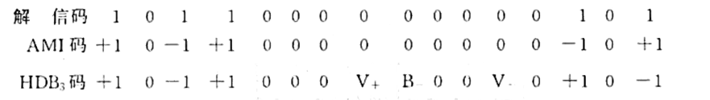
其波形均为三电平 \((+、 0 、-)\) 波形, 图略。
5.【课本 习题6-11】设基带传输系统的发送滤波器、信道及接收滤波器组成的总特性为 \(H(\omega)\) ，若要求以 \(2 / T_{B}\) 波特的速率进行数据传输，验证图 P6-5 所示的各种 \(H(\omega)\) 能否满足抽样点上无码间串扰的条件？
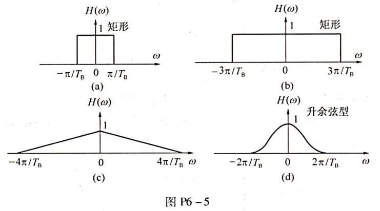
Note
方法 1: 根据奈奎斯特准则, 当传码率 \(R_{\mathrm{B}} = 1 / T_{\mathrm{B}}\) Baud 时, 无码间串扰的传输总特性 \(H(\omega)\) 应满足
\(\sum_{i} H\left(\omega + \frac{2 \pi i}{T_{\mathrm{B}}}\right) = C \quad |\omega| \leqslant \frac{\pi}{T_{\mathrm{B}}}\)
因此, 当 $R_{\mathrm{B}} = 2 / T_{\mathrm{B}} $ 时, 无码间串扰的 \(H(\omega)\) 应满足
\(\sum_{i} H\left(\omega + \frac{4 \pi i}{T_{\mathrm{B}}}\right) = C \quad |\omega| \leqslant \frac{2 \pi}{T_{\mathrm{B}}}\)
容易验证: 除 © 之外, (a)、(b) 和 (d) 均不满足上式所述的无码间串扰条件。
方法 2: 由 \(H(\omega)\) 求出系统无码间串扰的最高传码率 \(R_{\mathrm{Bmax}} = 2 f_{\mathrm{N}}\), 然后与实际传输速率 \(R_{\mathrm{B}} = 2 / T_{\mathrm{B}}\) 进行比较。若满足
\(R_{\mathrm{Bmax}} = n R_{\mathrm{B}} \quad n = 1, 2, 3, \cdots\)
则以实际速率 \(R_{\mathrm{B}}\) 进行数据传输时, 可以实现抽样点上无码间串扰。
(a) \(R_{\mathrm{Bmax}} = 1 / T_{\mathrm{B}} < R_{\mathrm{B}} = 2 / T_{\mathrm{B}}\), 故不能;
(b) \(R_{\mathrm{Bmax}} = 3 / T_{\mathrm{B}}\) 虽然大于 \(R_{\mathrm{B}}\), 但非整数倍关系, 故不能;
© \(R_{\mathrm{Bmax}} = 2 / T_{\mathrm{B}} = R_{\mathrm{B}}\), 故该 \(H(\omega)\) 满足无码间串扰传输的条件;
(d) \(R_{\mathrm{Bmax}} = 1 / T_{\mathrm{B}} < R_{\mathrm{B}}\), 故不能。
6.【课本 习题6-17、18】某二进制数字基带系统所传送的是单极性基带信号, 且数字信息“1”和“0”的出现概率相等。
(1) 若数字信息为“1”时, 接收滤波器输出信号在抽样判决时刻的值 \(A=1(\mathrm{~V})\), 且接收滤波器输出噪声是均值为 0 、均方根值为 \(0.2(\mathrm{~V})\) 的高斯噪声, 试求这时的误码率 \(P_{e}\);
(2) 若要求误码率 \(P_{e}\) 不大于 \(10^{-5}\), 试确定 \(A\) 至少应该是多少?
若将上题中的单极性信号改为双极性信号, 而其他条件不变, 重做上题中的各问，并进行比较。
Note
解（1）已知 \(P(1)=P(0)=1/2,\sigma_{R}=0.2,A=1\)，则单极性基带系统的误码率 \(P_{e}\) 为
\(P_{e}=\frac{1}{2} \operatorname{erfc}\left(\frac{A}{2 \sqrt{2} \sigma_{R}}\right)=\frac{1}{2} \operatorname{erfc}\left(\frac{1}{0.4 \sqrt{2}}\right)=6.21 \times 10^{-3}\)
（2）若要求 \(P_{e} \leqslant 10^{-5}\)，即 \(\frac{1}{2} \operatorname{erfc}\left(\frac{A}{2 \sqrt{2} \sigma_{R}}\right) \leqslant 10^{-5}\)，可求得 \(A \geqslant 8.6 \sigma_{R}\)。
若将上题中的单极性信号改为双极性信号，而其他条件不变，重做上题中的各问，并进行比较。
解 (1) 双极性基带系统的误码率 \(P_{e}\) 为
\(P_{e}=\frac{1}{2} \operatorname{erfc}\left(\frac{A}{\sqrt{2} \sigma_{R}}\right)=\frac{1}{2} \operatorname{erfc}\left(\frac{1}{0.2 \sqrt{2}}\right)=2.87 \times 10^{-7}\)
（2）若要求 \(P_{e} \leqslant 10^{-5}\)，即 \(\frac{1}{2} \operatorname{erfc}\left(\frac{A}{\sqrt{2} \sigma_{R}}\right) \leqslant 10^{-5}\)，可求得 \(A \geqslant 4.3 \sigma_{R}\)。
评注：在 \(A / \sigma_{R}\) 给定时，双极性基带系统的抗噪声性能优于单极性基带系统；在 \(\sigma_{R}\) 一定时，若要 \(P_{e}\) 相同，单极性基带信号的峰值 \(A\) 是双极性的两倍。
7.【课本 习题6-24】设计一个三抽头迫零均衡器。已知输入信号 \(x(t)\) 在各抽样点的值依次为 \(x_{-2} = 0, x_{-1} = 0.2, x_{0} = 1, x_{+1} = -0.3, x_{+2} = 0.1\)，其余均为零。
(1) 求三个抽头的最佳系数；
(2) 比较均衡前后的峰值失真。
Note
解（1）由本辅导书中式 (6.1-49) 可知，确定抽头系数 \(C_{i}\) 的 \(2 N+1\) 个线性方程为
\(\left\{\begin{array}{ll}\sum_{i=-N}^{N} C_{i} x_{k-i}=0 & k= \pm 1, \pm 2, \cdots, \pm N \\\sum_{i=-N}^{N} C_{i} x_{-i}=1 & k=0\end{array}\right.\)
据此，可列出三个抽头系数 \(C_{-1} 、 C_{0}\) 和 \(C_{1}\) 满足的矩阵方程
\(\left[\begin{array}{lll}x_{0} & x_{-1} & x_{-2} \\x_{1} & x_{0} & x_{-1} \\x_{2} & x_{1} & x_{0}\end{array}\right]\left[\begin{array}{l}C_{-1} \\C_{0} \\C_{1}\end{array}\right]=\left[\begin{array}{l}0 \\1 \\0\end{array}\right]\)
将样值 \(x_{k}\) 代入，可得方程组
\(\left\{\begin{array}{l}C_{-1}+0.2 C_{0}=0 \\-0.3 C_{-1}+C_{0}+0.2 C_{1}=1 \\0.1 C_{-1}-0.3 C_{0}+C_{1}=0\end{array}\right.\)
解得
\(C_{-1}=-0.1779, \quad C_{0}=0.8897, \quad C_{1}=0.2847\)
(2) 由式 \(y_{k}=\sum_{i=-N}^{N} C_{i} x_{k-i}\) 可算出
\(\begin{array}{ll}y_{-1}=0, & y_{0}=1, \quad y_{1}=0 \\y_{-3}=0, & y_{-2}=\quad-0.0356, \quad y_{2}=0.00356, \quad y_{3}=0.0285\end{array}\)
其余 \(y_{k}=0\)
输入峰值失真为
\(D_{x}=\frac{1}{x_{0}} \sum_{k \neq 0}^{\infty}\left|x_{k}\right|=0.6\)
输出峰值失真为
\(D_{y}=\frac{1}{y_{0}} \sum_{k \neq 0}^{\infty}\left|y_{k}\right|=0.06766\)
均衡后的峰值失真减小 8.87 倍。
第7章¶
1.设发送的二进制信息为 \(10101\)，码元速率为 \(1200 \mathrm{~B}\) :
(1) 当载波频率为 \(2400 \mathrm{~Hz}\) 时，试分别画出 2ASK、2PSK及2DPSK信号的波形;
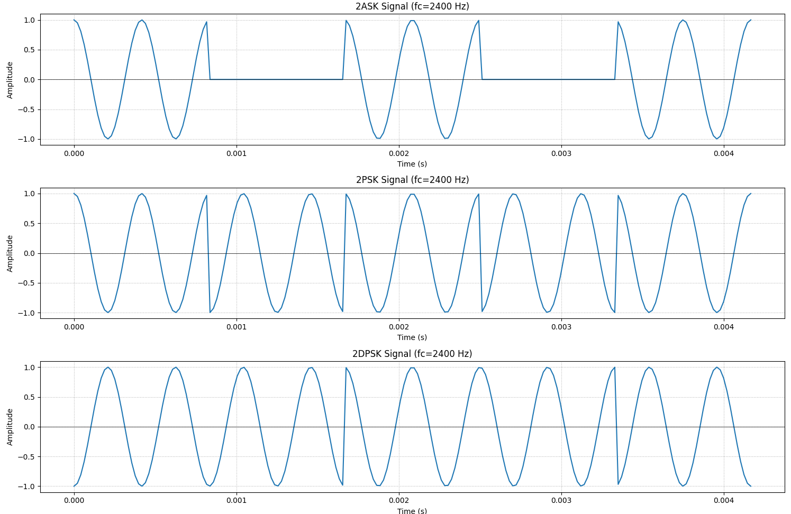
(2) 2FSK的两个载波频率分别为 \(1200 \mathrm{~Hz}\) 和 \(2400 \mathrm{~Hz}\) 时,画出其波形。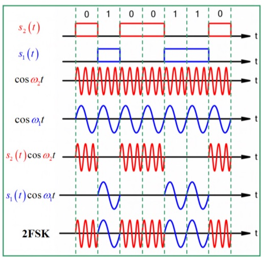

(3) 上述各已调信号的带宽是多少?
Note
2ASK / 2PSK / 2DPSK 带宽:
- 理论公式: $ B = 2 R_b $ \(R_b = 1200\)Baud \(B = 2 \times 1200 = 2400\)Hz
2FSK 带宽:
- 理论公式: \(B = |f_2 - f_1| + 2 R_b\) $f_1 = 1200 \(Hz,\) f_2 = 2400 $Hz \(|f_2 - f_1| = 1200\)Hz \(R_b = 1200\)Baud \(B = 1200 + 2 \times 1200 = 3600\)Hz
2.设某2FSK传输系统的码元速率为\(1000\text{B}\)，已调信号的载频分别为\(1000\text{Hz}\)和\(2000\text{Hz}\)。发送数字信息为\(011010\)：
(1) 试画出一种2FSK信号调制器原理框图，并画出2FSK信号的时间波形；
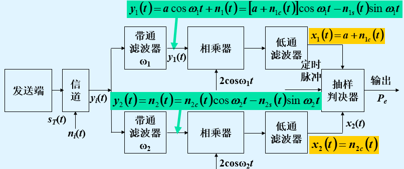
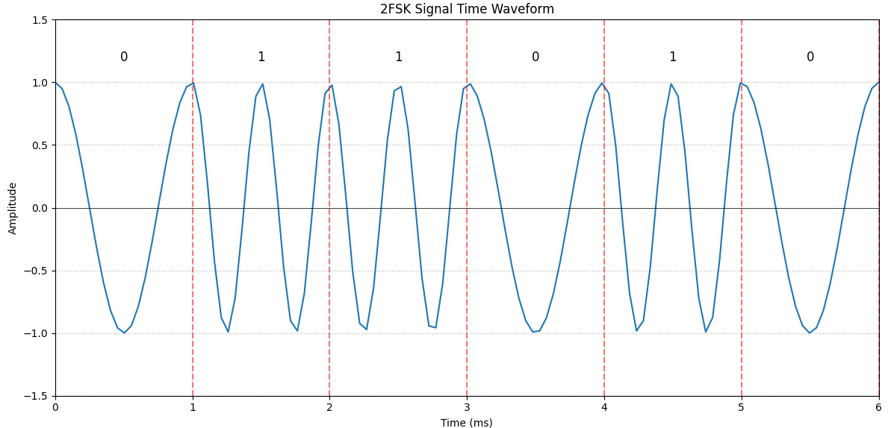
(2) 试画出2FSK信号的功率谱密度示意图。
1. 连续谱：
- 以f1=1000Hz为中心，主瓣范围约0~2000Hz（带宽2Rb=2000Hz），呈sinc²衰减；
- 以f2=2000Hz为中心，主瓣范围约1000~3000Hz，与前者重叠1000~2000Hz；
- 旁瓣按1/f²衰减，幅度随频率升高快速下降。
2. 离散谱：
- 在f1和f2处存在冲击函数，幅度为连续谱峰值的1/4（理论值）。
3.采用\(2FSK\)方式在等效带宽为\(2400Hz\)的传输信道上传输二进制数字。\(2FSK\)信号的频率分别为\(f_{1} = 980Hz\)，\(f_{2} = 1580Hz\)，码元速率\(R_{B} = 300B\)。接收端输入（即信道输出端）的信噪比为\(6dB\)。试求：
(1) 2FSK信号的带宽；
(2) 同步检测法解调时系统的误码率。
Note
2FSK（二进制频移键控）信号的带宽主要由两个载波频率的间隔和码元速率决定。其带宽计算公式为：\(B = |f_2 - f_1| + 2R_B\)
已知 \(f_1 = 980\text{Hz}\)，\(f_2 = 1580\text{Hz}\)，码元速率 \(R_B = 300\text{B}\)，则：\(|f_2 - f_1| = 1580 - 980 = 600\text{Hz}\) 代入公式得：\(B = 600 + 2 \times 300 = 1200\text{Hz}\)
分贝与线性值的转换基于对数运算，公式为：\(\text{SNR(dB)} = 10 \log_{10}\left(\frac{S}{N}\right)\) 其中，S 为信号功率，N 为噪声功率，\(\frac{S}{N}\) 即信噪比的线性值。
已知输入信噪比为 \(6\,\text{dB}\) 时，代入公式：\(6 = 10 \log_{10}\left(\text{SNR}_{\text{in}}\right)\)
计算得到近似值为4.
在 2FSK 系统中，每个带通滤波器需匹配单个载波频率的信号带宽。对于矩形脉冲调制的信号，其带宽约为：\(B_0 = 2R_B = 2 \times 300 = 600 \, \text{Hz}\)，是信道宽度的¼，即\(S_o/N_o=4\)
带通滤波器输出端的信噪比\(r = 4 \times 4 = 16\)
将\(r\)代入误码率计算公式即可得解
\(P_{e} \approx \frac{1}{\sqrt{2 \pi r}} e^{-\frac{r}{2}}\)
4.假设采用2DPSK方式在微波线路上传送二进制数字信息。已知码元速率\(R_B=10^6\)B，信道中加性高斯白噪声的单边功率谱密度\(n_0=2 \times 10^{-10}\)W/Hz。今要求误码率不大于\(10^{-4}\)。试求：
(1)采用相干解调一码反变换时，接收机输入端所需的信号功率。

第11章¶
1.码组11010，其码长和码重为多少？
Note
其码长n=5，码重W=3。
码长：指一个码组中包含的码元（bit）数量，即码组的长度。
码重：指码组中 “1” 的个数，反映码组的非零元素数量。
2.已知一个 \((7,3)\) 码的生成矩阵为
\(G=\left[\begin{array}{lllllll} 1 & 0 & 0 & 1 & 1 & 1 & 0 \\ 0 & 1 & 0 & 0 & 1 & 1 & 1 \\ 0 & 0 & 1 & 1 & 1 & 0 & 1 \end{array}\right]\)
试列出其所有许用码组，并求出其监督矩阵。
Note
（1）
\(0000000 \quad 1001110 \quad 0011101 \quad 1010011\) \(\begin{array}{llll}0100111 & 1101001 & 0111010 & 1110100\end{array}\)
（2） \(G=\left[I_{k} Q\right]\) 为典型阵, \(P=Q^{\mathrm{T}}=\left[\begin{array}{l}101 \\ 111 \\ 110 \\ 011\end{array}\right]\), 因此监督矩阵为
\(H=\left[P I_{r}\right]=\left[\begin{array}{lllllll} 1 & 0 & 1 & 1 & 0 & 0 & 0 \\ 1 & 1 & 1 & 0 & 1 & 0 & 0 \\ 1 & 1 & 0 & 0 & 0 & 1 & 0 \\ 0 & 1 & 1 & 0 & 0 & 0 & 1 \end{array}\right]\)
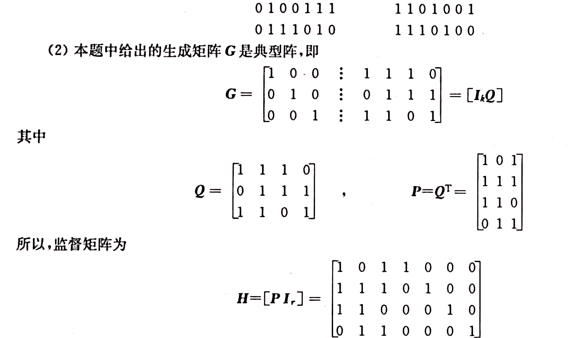 解题过程：
码长 \(n = 7\)，信息位 \(k = 3\)，监督位 \(r = n - k = 4\)
信息位 u 共有 \(2^3 = 8\) 种组合（从 000 到 111）。
许用码组 \(C = u \cdot G\) 是一个 \(1 \times 7\) 的向量，其中每个元素 \(c_j\) 由 u 与 G 的第 j 列的模 2 内积计算得到：\(c_j = \sum_{i=1}^3 u_i \cdot G_{i,j} \quad (\text{模2运算})\)
以 \(u = [1, 0, 1]\) 为例），计算一组许用编码
- 计算 \(c_1\)（对应 G 的第 1 列）：\(c_1 = 1 \cdot 1 + 0 \cdot 0 + 1 \cdot 0 = 1 + 0 + 0 = 1 \quad (\text{模2})\)
- 计算 \(c_2\)（对应 G 的第 2 列）：\(c_2 = 1 \cdot 0 + 0 \cdot 1 + 1 \cdot 0 = 0 + 0 + 0 = 0 \quad (\text{模2})\)
- 计算 \(c_3\)（对应 G 的第 3 列）：\(c_3 = 1 \cdot 0 + 0 \cdot 0 + 1 \cdot 1 = 0 + 0 + 1 = 1 \quad (\text{模2})\)
- 计算 \(c_4\)（对应 G 的第 4 列）：\(c_4 = 1 \cdot 1 + 0 \cdot 0 + 1 \cdot 1 = 1 + 0 + 1 = 0 \quad (\text{模2，因 } 1+1=0)\)
- 计算 \(c_5\)（对应 G 的第 5 列）：\(c_5 = 1 \cdot 1 + 0 \cdot 0 + 1 \cdot 1 = 1 + 0 + 1 = 0 \quad (\text{模2})\)
- 计算 \(c_6\)（对应 G 的第 6 列）：\(c_6 = 1 \cdot 1 + 0 \cdot 1 + 1 \cdot 0 = 1 + 0 + 0 = 1 \quad (\text{模2})\)
- 计算 \(c_7\)（对应 G 的第 7 列）：\(c_7 = 1 \cdot 0 + 0 \cdot 1 + 1 \cdot 1 = 0 + 0 + 1 = 1 \quad (\text{模2})\)
最终编码结果：\(C = [1, 0, 1, 0, 0, 1, 1]\)
对于系统形式的生成矩阵\(G = [I | P]\)，其监督矩阵H的形式为\([P^T | I]\)，这里的\(P^T\)是P的转置矩阵，I为\(4×4\)的单位矩阵。
- 信息位部分I为一个\(3×3\)的单位矩阵： \(I = \left[\begin{array}{lll} 1 & 0 & 0 \\ 0 & 1 & 0 \\ 0 & 0 & 1 \end{array}\right]\)
- 校验位部分P是一个\(3×4\)的矩阵： \(P = \left[\begin{array}{llll} 1 & 1 & 1 & 0 \\ 0 & 1 & 1 & 1 \\ 1 & 1 & 0 & 1 \end{array}\right]\)
接下来计算P的转置矩阵\(P^T\)：
\(P^T = \left[\begin{array}{lll} 1 & 0 & 1 \\ 1 & 1 & 1 \\ 1 & 1 & 0 \\ 0 & 1 & 1 \end{array}\right]\)
最后，把\(P^T\)和\(4×4\)单位矩阵组合起来，得到监督矩阵H：
\(H = \left[\begin{array}{lll|llll} 1 & 0 & 1 & 1 & 0 & 0 & 0 \\ 1 & 1 & 1 & 0 & 1 & 0 & 0 \\ 1 & 1 & 0 & 0 & 0 & 1 & 0 \\ 0 & 1 & 1 & 0 & 0 & 0 & 1 \end{array}\right]\)
3.已知一个（7, 4）循环码的全部码组为
\(\begin{array}{ccccccccccccc}0000000 & 1000101 & 0001011 & 1001110 & & & & & & & & & \\0010110 & 1010011 & 0011101 & 1011000 & & & & & & & & & \\0100111 & 1100010 & 0101100 & 1101001 & & & & & & & & & \\0110001 & 1110100 & 0111010 & 1111111 & & & & & & & & &\end{array}\)
试写出该循环码的生成多项式 \(g(x)\) 和生成矩阵 \(G(x)\), 并将 \(G(x)\) 化成典型阵。
Note
(1) 生成多项式 \(g(x)=x^{3}+x+1\)
(2) 生成矩阵
\(G(x)=\left[\begin{array}{c}x^{3} g(x) \\x^{2} g(x) \\x g(x) \\g(x)\end{array}\right]=\left[\begin{array}{c}x^{6} + x^{4} + x^{3} \\x^{5} + x^{3} + x^{2} \\x^{4} + x^{2} + x \\x^{3} + x + 1\end{array}\right]\)
或写成 \(G=\left[\begin{array}{lllllll}1011000\\0101100\\0010110\\0001011 \end{array}\right]=\left[\begin{array}{cc}1000 & 101 \\0100 & 111 \\0010 & 110 \\0001 & 011\end{array}\right]=\left[I_{k} Q\right]\) 解题过程：
通过分析码组，最小权重的非零码字对应的多项式为\(g(x) = x^3 + x + 1\)，且该多项式能整除所有码字多项式。
- 0001011 对应多项式 \(x^3 + x^1 + x^0\)，次数为 3，符合。
构造生成矩阵 \(G(x)\)：
生成矩阵 \(G(x)\) 由 \(g(x)\) 的倍式构成，每个倍式对应信息位的一个基向量：
\(G(x) = \begin{bmatrix} x^3 g(x) \\ x^2 g(x) \\ x g(x) \\ g(x) \end{bmatrix} = \begin{bmatrix} x^6 + x^4 + x^3 \\ x^5 + x^3 + x^2 \\ x^4 + x^2 + x \\ x^3 + x + 1 \end{bmatrix}\)
对应的矩阵形式为：
\(G = \begin{bmatrix} 1 & 0 & 1 & 1 & 0 & 0 & 0 \\ 0 & 1 & 0 & 1 & 1 & 0 & 0 \\ 0 & 0 & 1 & 0 & 1 & 1 & 0 \\ 0 & 0 & 0 & 1 & 0 & 1 & 1 \end{bmatrix}\)
将 G 化为典型阵：
典型生成矩阵形式为 \([I_k | P]\)，其中 \(I_k\) 为 \(k \times k\) 单位矩阵，P 为 \(k \times (n - k)\) 矩阵。通过行变换将 G 化为：
\(G_{\text{典型}} = \begin{bmatrix} 1 & 0 & 0 & 0 & 1 & 0 & 1 \\ 0 & 1 & 0 & 0 & 1 & 1 & 0 \\ 0 & 0 & 1 & 0 & 0 & 1 & 1 \\ 0 & 0 & 0 & 1 & 1 & 1 & 1 \end{bmatrix}\)
4.【课本 习题11-6】已知某线性码的监督矩阵为
\(H=\left[\begin{array}{lllllll}1 & 1 & 1 & 0 & 1 & 0 & 0 \\1 & 1 & 0 & 1 & 0 & 1 & 0 \\1 & 0 & 1 & 1 & 0 & 0 & 1\end{array}\right]\)
试列出其所有可能的码组。
Note

评论